Part 1:
1.1: Some screenshots of the wireframe from scene/pinned2.json:
Without any shearing constraints:
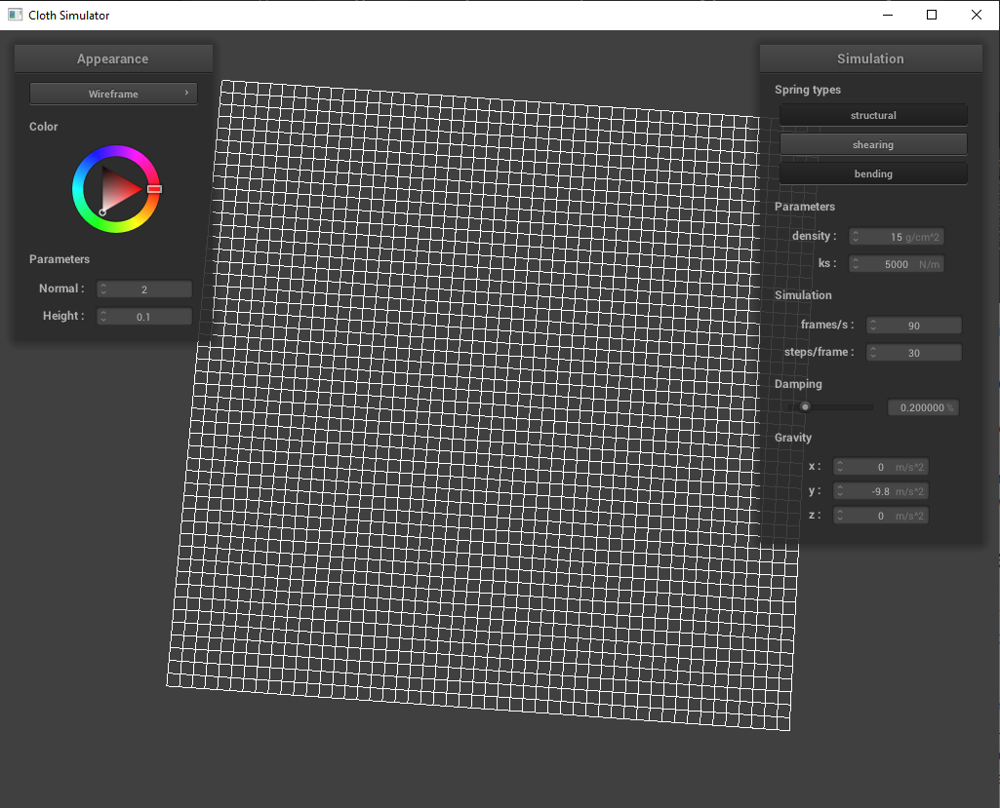With only shearing constraints:
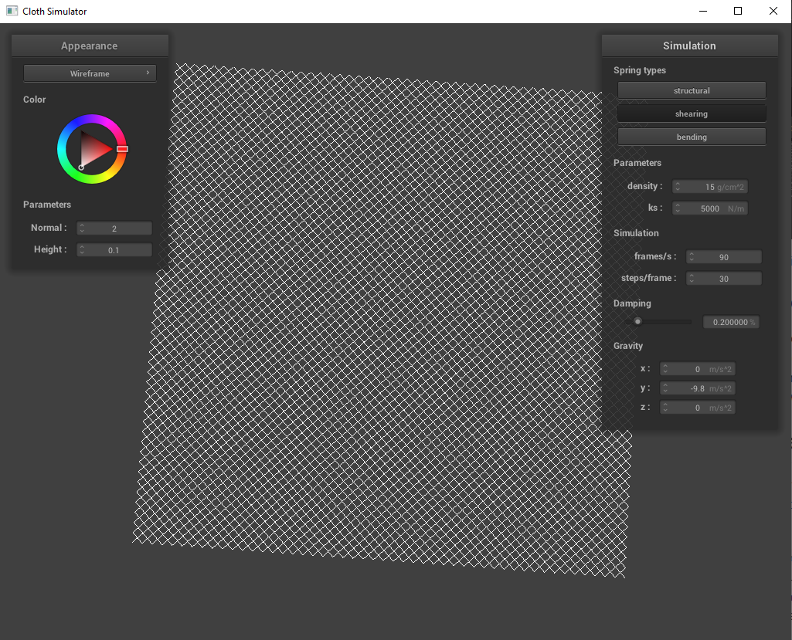With all constraints:

Part 2:
2.1: Playing around with some values of ks, density, damping
First, here is pinned2.json with default parameters (density: 15 g/cm^2, ks: 5,000 N/m, damping: 0.2%)
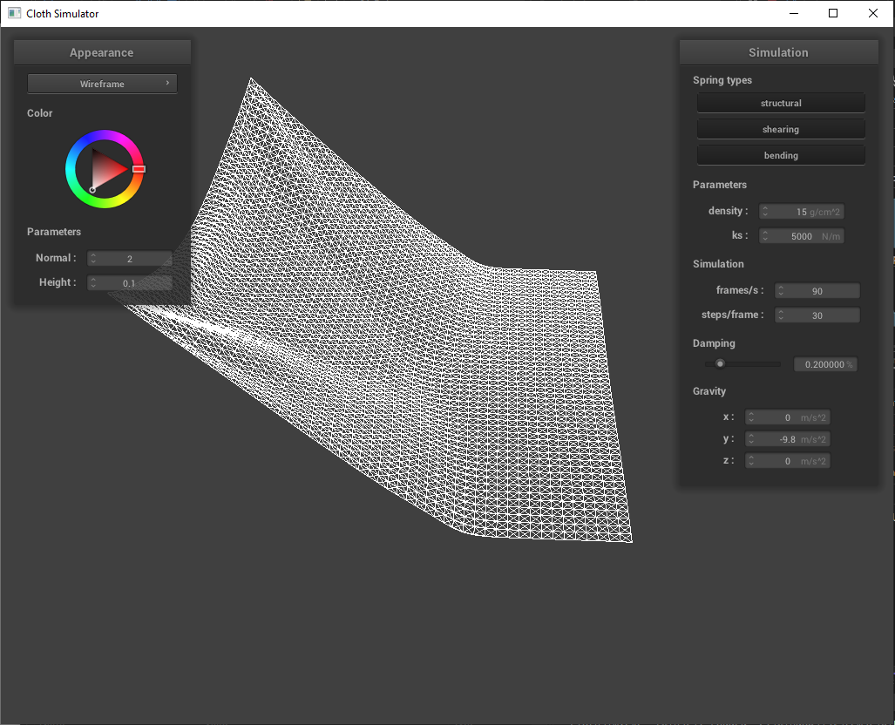2.1 (cont.): Playing with values of ks
In general, the value of ks describes the stiffness of the spring. When we increase the value of ks, we increase the stiffness of the springs: that is, it requires more force in order to change the length of the spring.
When looking at pinned2 mid-fall with ks 5,000 N/m, we see a crease form in the middle of the sheet as a result of gravity pulling the middle down but the corners being pinned (the image below is the same as the default one above).
When we increase ks to 50,000 N/m, we see that at a similar position of the sheet mid-fall, there is no longer a crease in the middle of the sheet (note that there is a crease in the beginning of the fall but the crease disappears faster). That is because, the stiffer the spring, the more resistant to force the springs will be. Intuitively, this visual difference makes sense. You can imagine a sheet with infinite ks as acting as one distinct object, like a slab of wood instead of a sheet. In this case, the slab of wood would just hinge on the two points and essentially rotate flatly without changing shape. So basically, as we increase ks, the sheet acts more and more like a solid slab of wood in that the shape is more resistant to change.
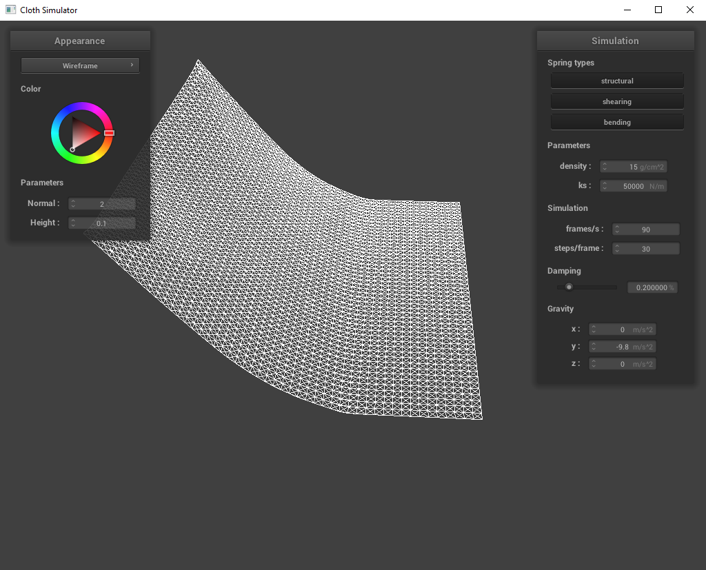When we decrease ks to 5 N/m, the opposite happens. The springs are less rigid so the sheet as a whole changes shape more. We can see this in the scene as the crease in the middle of the sheet at a given position as it is falling is deeper than with the default ks.
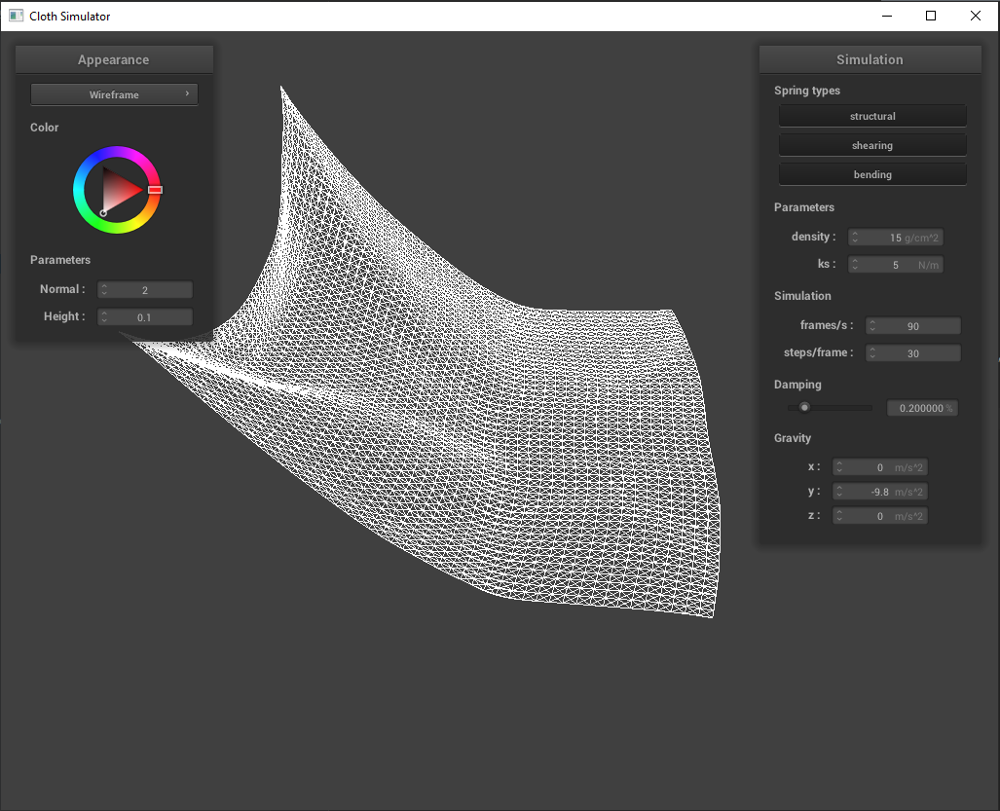Also, there is much less of a "shelf" where the sheet folds over horizontally once the sheet has fallen
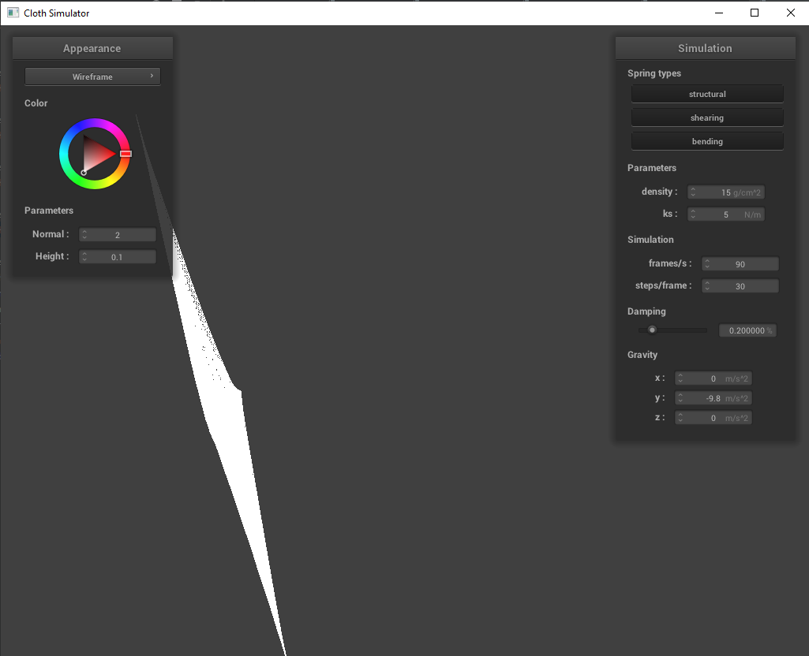2.1 (cont.): Playing with values of density
In general, the value of density visually does the opposite of what the value of ks does.
When we decrease the density to 1 g/cm^2, we see that the crease in the middle of the sheet disappears very quickly into the fall
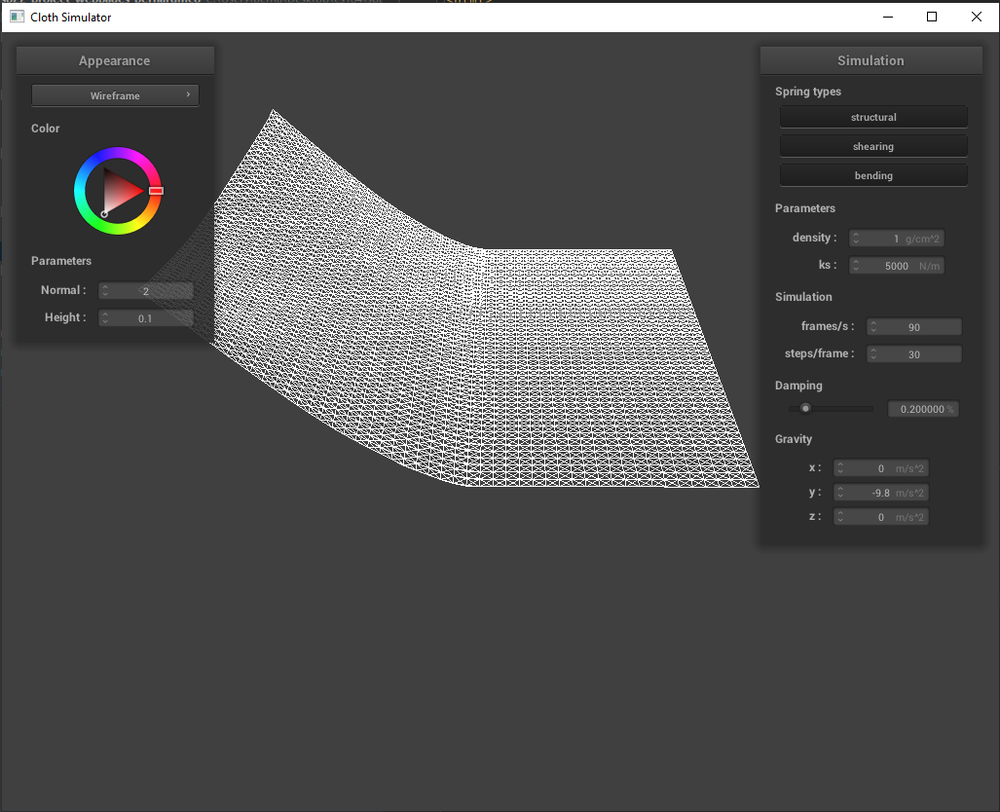Conversely, when we increase the density to 150 g/cm^2, the crease is deeper at a similar point of the fall
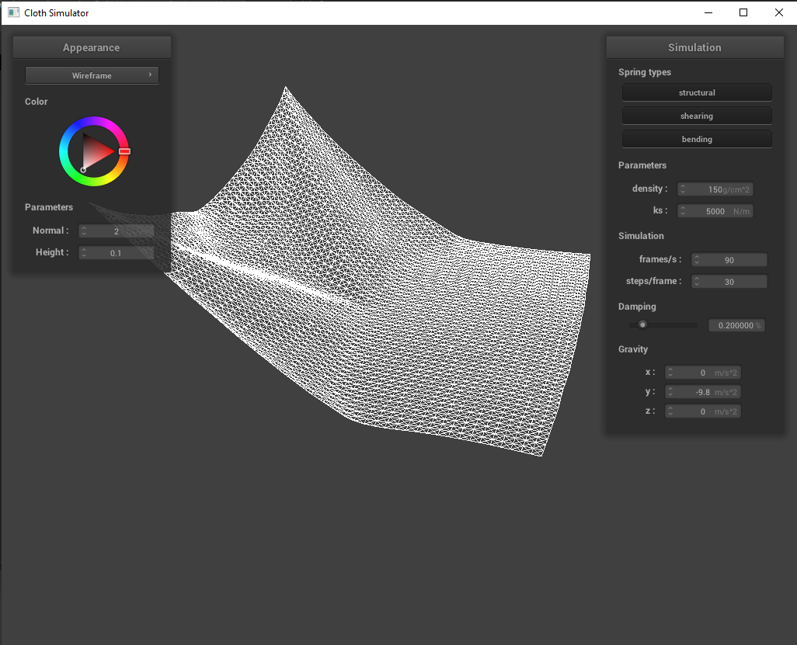2.1 (cont.): Playing with values of damping
Generally, the damping parameter controls how much the springs can bounce back so a higher damping percentage means the springs are really free to bounce back and forth while a lower damping percentage means the springs reach equilibrium very quickly
When we increase the damping percentage to 100%, the sheet just swing falls and then instead of coming to rest fairly quickly, it way overshoots just laying vertical and swings back and forth like a swing on a playground.
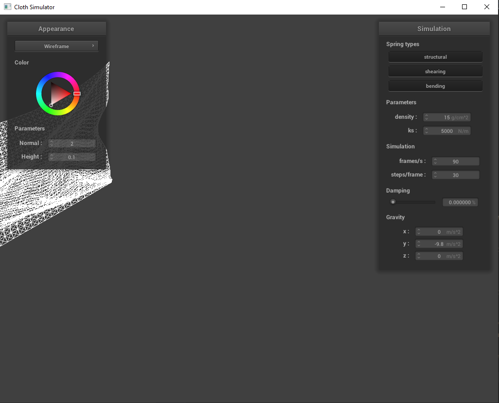When we decrease the damping percentage to 0%, it falls extremely slowly and then comes to rest without having to really move too far and then swing back. Visually, it appears to reach equilibrium without even having to overshoot and then correct back by swinging the opposite direction.
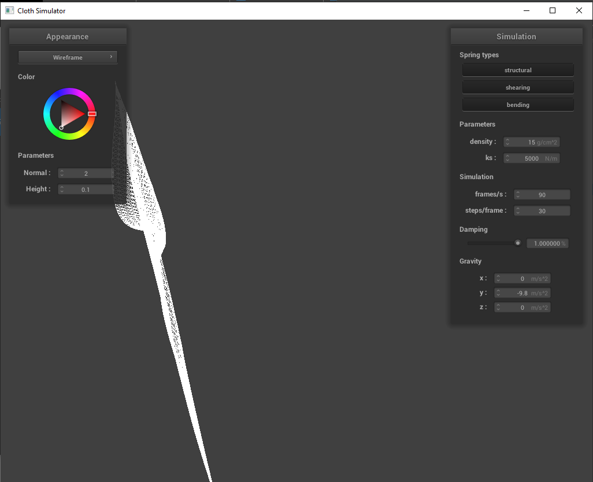2.2: pinned4 in final resting state with default parameters:
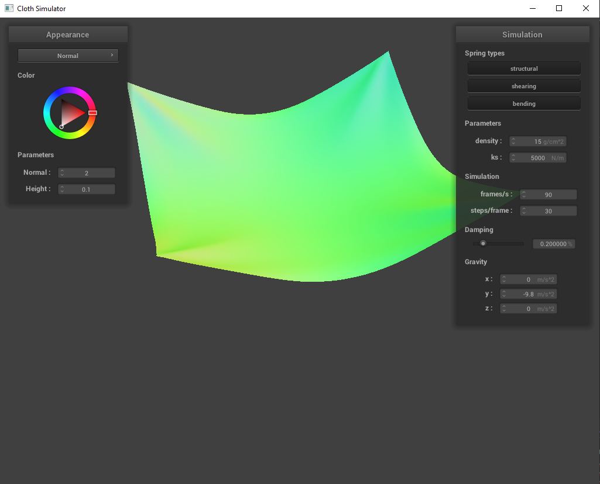Part 3:
3.1: